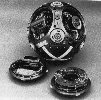
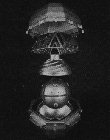

Last updated 22 October 1997
The AIRS (Advanced Inertial Reference Sphere) is the most accurate inertial navigation (INS) system ever developed, and perhaps marks the end of a long process of continuous refinement of INS technology.
This immensely complex and expensive INS unit has "third generation" accuracy as defined by Dr. Charles Stark Draper, the leading force in the development of hyper-accurate inertial guidance. This translates into INS drift rates of less than 1.5 x 10^-5 degrees per hour of operation. This drift rate is so low that the AIRS contributes on the order of only 1% of the Peacekeeper missile's inaccuracy, and is thus effectively a perfect guidance system (i.e. a zero drift rate would not measurably improve the Peacekeeper's performance).
Very little of the precision of this guidance system is even exploited during a ballistic missile flight, it is mostly used simply to maintain guidance system alignment on the ground during missile alert without needing an external reference through precision gyrocompassing. Most ICBMs require an external alignment system to keep the INS in synch with the outside world prior to launch. The AIRS is probably as good as any INS for ICBM guidance needs to get.
The penalty for this extreme level of accuracy is tremendous complexity and cost. The AIRS has 19,000 parts. In 1989 a single accelerometer used in the AIRS (there are three) cost $300,000 and took six months to manufacture.
There are very few applications requiring both such precise guidance and independence from external references. In fact, beyond ICBM guidance, none have been identified. If the requirement for complete autonomy is eliminated, extreme guidance accuracy is available at a small fraction of its cost and weight. For example, the advent of satellite positioning systems like GPS (Global Positioning System) and GLONASS, which permit centimeter level accuracy over unlimited periods of operation with only a light inexpensive receiver. NASA spcecraft require extreme guidance precision, but use external navigation cues to obtain it. Even new nuclear weapon guidance programs have shown a willingness to sacrifice autonomy for cost and weight. The proposed BIOS (Bomb Impact Optimization System), a glide-bomb adaptation of the B-61, has proposed using GPS for guidance instead of an INS. Given the competition from advanced external reference based approaches, INS technology has probably reached the end of the line as far as accuracy goes.
The MX (later Peacekeeper) missile began development in February 1972. The military requirements for this missile called for greatly enhanced accuracy, accuracy the AIRS was well positioned to deliver. In May 1975 the AIRS was transferred from the Draper Laboratory to Northrop for advanced development. It proved extremely difficult to transfer the hand-crafted laboratory built design to a production environment. Despite years of work, by July 1987 Northrop Electronics Division had succeeded in delivering only a small number of INS units. MX missiles were beginning to pile up in silos with no guidance system to fly them. By December 1988 AIRS units had been supplied to all 50 MX missiles. Since that time reponsibility for producing AIRS units has been transferred to the Autonetics Division, Rockwell International.
With the planned retirement of the Peacekeeper missile under the terms of the START II treaty (signed 3 January 1993) by 2004, the Minuteman III will be left as the sole U.S. land-based ICBM through the year 2020. Because of this shift in importance, the Minuteman III force is to be upgraded to the same standards of accuracy of the Peacekeeper. Accordingly, between 1998 and 2002, 652 new AIRS guidance units will be purchased and fitted to the existing Minuteman III.
The most novel aspect of the AIRS is that it has no gimbals. Gimbals are pivots that are provided for each of three spatial axes so that the guidance platform can move freely in all directions (and thus maintain its absolute alignment with the outside world). The AIRS consists of a beryllium sphere that floats in a fluorocarbon fluid within an outer shell and can thus rotate in any direction. The importance of this innovation is that it eliminates the possibility of gimbal lock (where the axes of two gimbals line up and destroy the three-dimensional freedom of motion), and is free from arbitrary limits to range of motion found in some gimbal designs.
The temperature of the fluid is controlled with extreme accuracy by transfer of heat from the fluid through "Power shells" to freon-cooled heat exchangers. The alignment of the sphere is controlled by three hydraulic thrust valves directed by the inertial sensors in the sphere.
Like other INS systems, the sphere houses three accelerometers and three gyroscopes. The accelerometer design is called a SFIR (specific force integrating reciever). This is essentially the same approach as the pendulous integrating gyro accelerometer (of PIGA) used in the Minuteman II. The SFIR/PIGA works by measuring the rate of precession (and thus force applied) to a gyroscope at right angles to its axis of rotation. The gyroscope is a floated gas bearing gyroscope design.

AIRS opened to show a gyroscope and accelerometer

Exploded view of system enclosing the AIRS
The AIRS was in large part an evolutionary development of INS technology. The principle measuring instruments (the accelerometers and gyroscopes) are direct descendants of technologies used in earlier ICBM INS systems like the Minuteman II. These technologies were developed over a period 30 years by the Charles Stark Draper Laboratory (formerly the Instrumentation Laboratory of MIT).
The gimballess floated sphere was conceived at the Instrumentation Laboratory in the late 50s by Philip Bowditch, who dubbed the concept the "flimbal". It was developed into a deployable system by Kenneth Fertig, under an Air Force program known as SABRE. In 1969 the highly accurate ICBM guidance program was eliminated, but resurrected as the MPMS (missile position measurement system). In this guise it was test flown riding "piggy back" on an Minuteman III in 1976 (i.e. in addition to the actual Minuteman III NS-20 guidance system). The AIRS was so accurate that it could be conveniently used as a benchmark for evaluating other INS systems.
Inventing Accuracy: An Historical Sociology of Nuclear Missile Guidance, by Donal Mackenzie; MIT, 1990.
MX Basing: Key to Minimizing Risk of Nuclear War, Defense Electronics, Nov. 1981, pp. 70-79.
{kind=link}
{kind=link}
{kind=link}